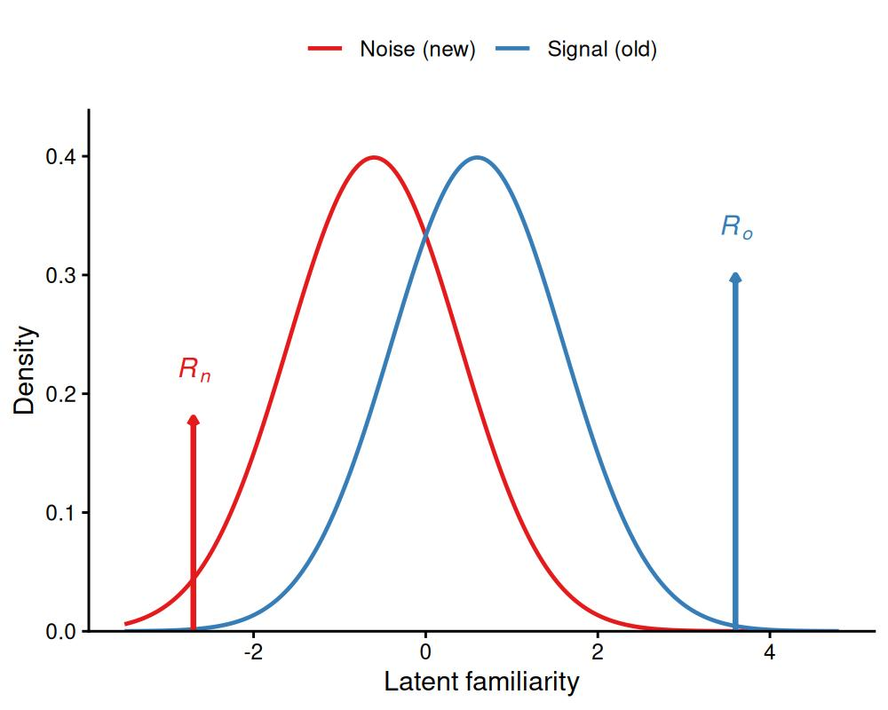
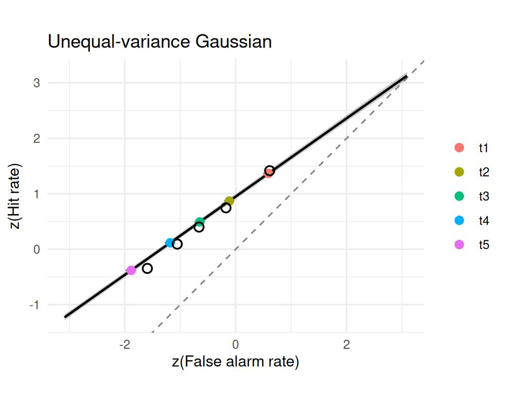
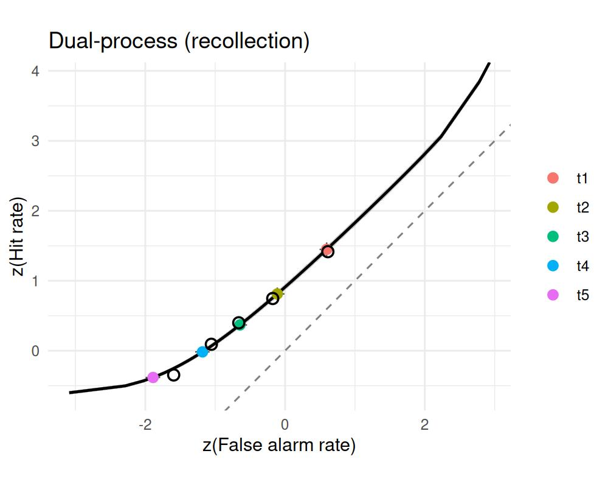
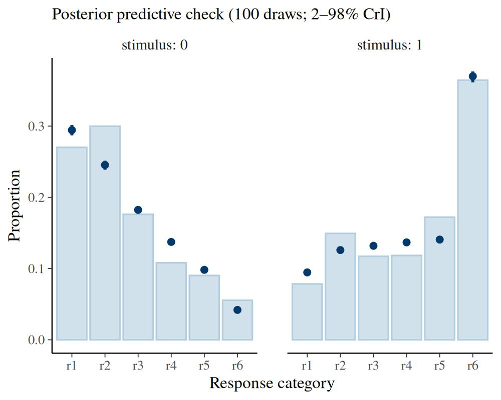
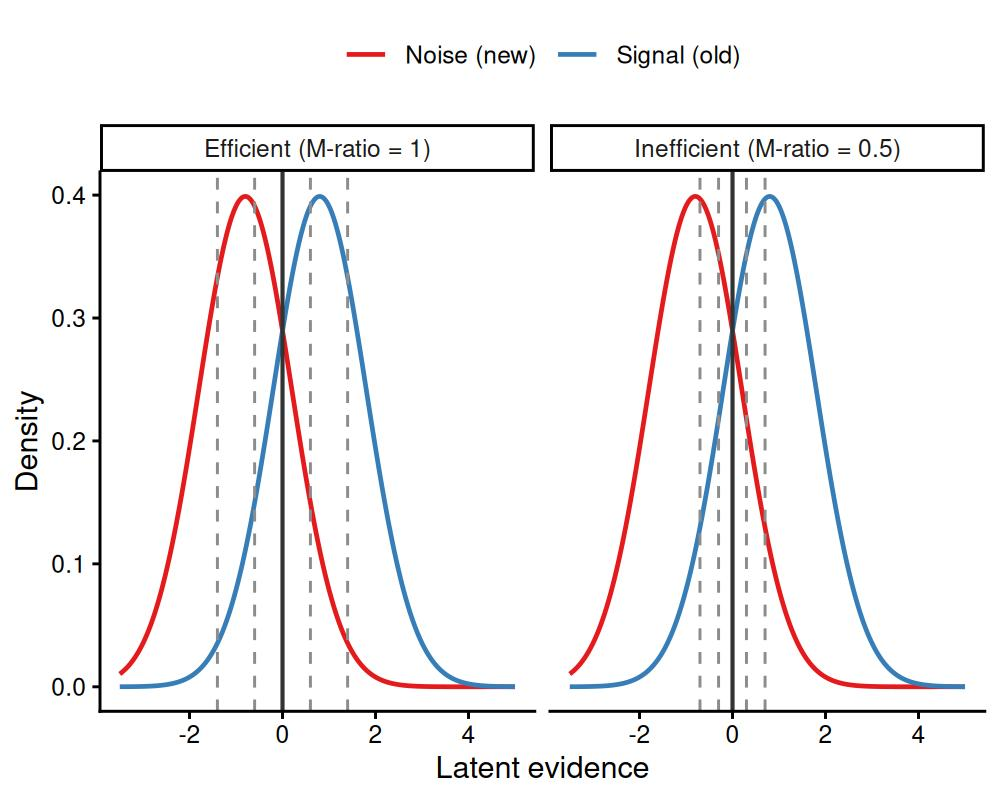
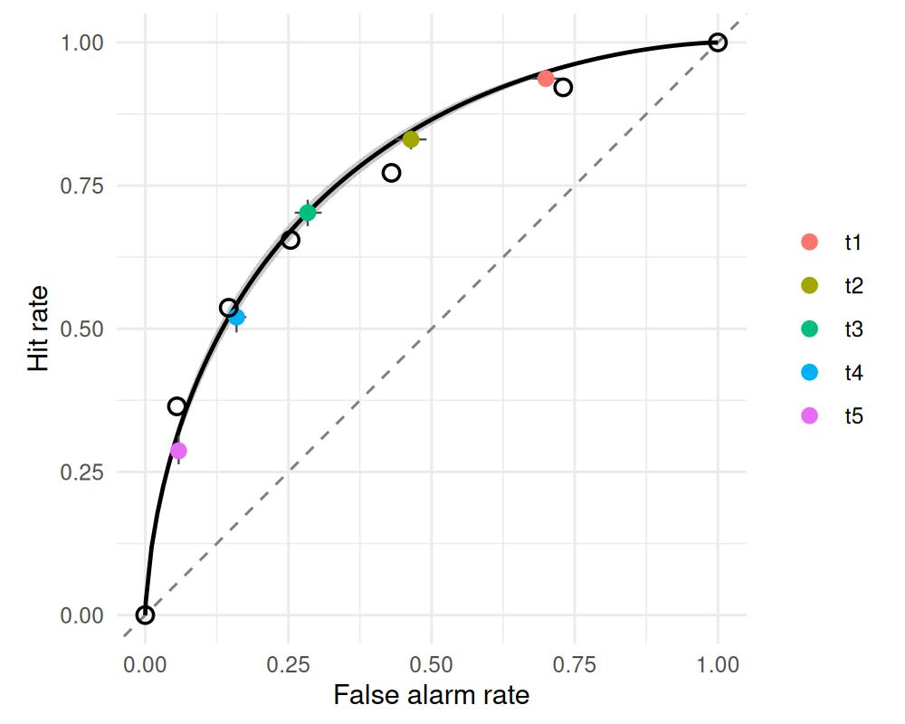
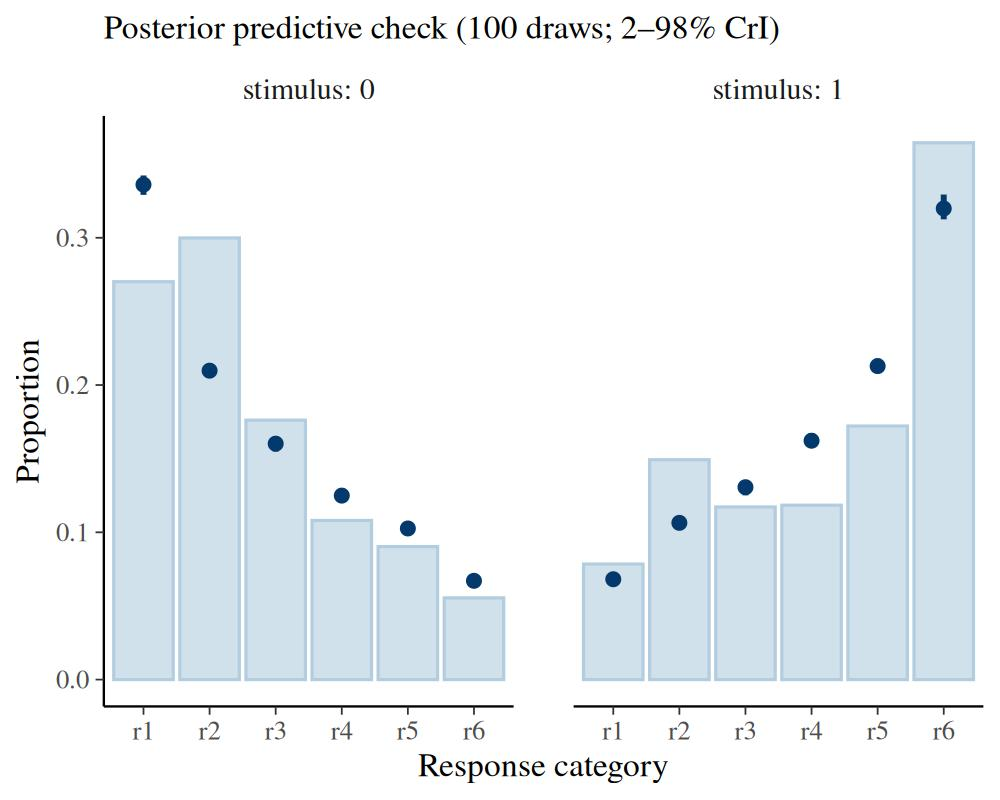

Dual-process and meta-d′ signal detection models
Gidon Frischkorn
Ven Popov
Source:vignettes/articles/bmm_sdt_dualprocess_metad.Rmd
bmm_sdt_dualprocess_metad.Rmd1 Beyond familiarity: two process models
The confidence-rating SDT model treats recognition as a single continuous process: an item generates a sample of memory strength (or familiarity), and the observer maps that one number onto an ordered confidence scale. A persistent finding in recognition memory is that the resulting ROC is asymmetric — on z-transformed axes its slope is below one. The core SDT article reads that asymmetry as unequal variance: the old-item distribution is simply wider than the new-item distribution.
Unequal variance is not the only explanation. Two influential models keep the familiarity process but add a second process that also leaves its mark on the ROC:
- Dual-process SDT (Yonelinas 1994) adds a recollection process: besides graded familiarity, an item can be consciously recollected, which supports a confident, all-or-none response. Recollection is one of the two standard accounts of the recognition ROC’s shape, the other being unequal variance (Wixted and Mickes 2010; Yonelinas 2024).
- Meta-d′ (Maniscalco and Lau 2012) adds a metacognitive read-out: it asks how well an observer’s confidence tracks whether their decision was actually correct, separately from how well they discriminate old from new.
Both are versions of the same rating model — they consume identical data
(counts per confidence category, with a 0/1 stimulus column) and reduce to the
standard model when their extra parameter is switched off. They are selected with
the version argument of sdt_rating():
version |
extra parameter(s) | captures | reduces to standard when |
|---|---|---|---|
"standard" (default) |
— | familiarity / strength only | always |
"dpsdt" |
Ro, Rn
|
recollection of old items / recall-to-reject (Rn) of new items |
Ro, Rn → 0 |
"metad" |
logmratio |
metacognitive efficiency (log M-ratio) |
logmratio = 0 |
This article assumes the core SDT article: the four-step
fitting workflow, the standard rating model, confidence thresholds, and the
roc_sdt() / latent_sdt() / sdt_thresholds() / pp_check() toolkit. We
focus here on what the second process adds — and because both versions are
plain bmm models, everything from that workflow (hierarchical formulas,
priors, post-processing) carries over unchanged.
2 Dual-process SDT
2.1 The model
Dual-process theory holds that a recognition decision can draw on two separable sources (Yonelinas 1994; the description here follows Wixted and Mickes 2010). Familiarity is a graded signal-detection process: old and new items generate overlapping Gaussian evidence, exactly as in the standard model. Recollection is a high-threshold process: with some probability the observer retrieves specific details that settle the decision with high confidence, and otherwise recollection fails and they fall back on familiarity.
bmm parameterizes recollection with two probabilities, both on the logit
scale:
-
Ro— recall-to-accept: the probability \(\mathrm{logit}^{-1}(\texttt{Ro})\) that an old item is recollected as old, producing the most-confident “old” rating. -
Rn— recall-to-reject: the probability \(\mathrm{logit}^{-1}(\texttt{Rn})\) that a new item is recollected as new (its absence from the studied set is recollected), producing the most-confident “new” rating.
The classic dual-process model of long-term recognition has recollection for old items only (Wixted and Mickes 2010). The two-sided version with a recall-to-reject term is the dual-process model that Yonelinas (2024) applies to visual working memory, where the threshold component carries both terms: in a single-probe test, the item held in memory rejects a changed probe as readily as it accepts an unchanged one, and in change detection with a whole-array probe it is recall-to-reject that recollection mainly supports. The probability of each confidence category is then a mixture: a recollection component that piles mass on the extreme category, and a \((1 - R)\)-weighted familiarity component spread across the scale by the thresholds.

Figure 2.1: Dual-process model. Old and new items generate equal-variance familiarity evidence (curves); on a fraction Ro of old trials recollection succeeds and the item is reported with maximal ‘old’ confidence (right spike), and on a fraction Rn of new trials recall-to-reject yields maximal ‘new’ confidence (left spike). The recollection mass sits on top of the familiarity process, not on the evidence axis.
Because recollection adds mass at the high-confidence ends, its fingerprint is a curved z-transformed ROC: a pure unequal-variance Gaussian produces a straight zROC (slope \(1/s\)), whereas a threshold component bends it (Yonelinas 2024). We return to this contrast below.
Ro and Rn are fixed off by default (a constant near \(-\infty\) on the
logit scale, so recollection probability \(\approx 0\) and the model is exactly the
standard rating model). You switch recollection on by adding it to the formula —
Ro ~ 1 for the one-sided model (recollection of old items only) or
Ro ~ 1, Rn ~ 1 for the two-sided model.
2.2 Worked example: recognition memory
We use the same Pratte et al. (2010) recognition data as the core article (from the
roc6 collection in the MPTinR
package): 97 subjects judging old and new items on a 6-point confidence scale.
stopifnot(requireNamespace("MPTinR", quietly = TRUE))
data("roc6", package = "MPTinR")
pratte <- roc6[roc6$exp == "Pratte_2010", ]
rating_data <- rbind(
data.frame(id = pratte$id, stimulus = 1L,
r1 = pratte$OLD_3new, r2 = pratte$OLD_2new, r3 = pratte$OLD_1new,
r4 = pratte$OLD_1old, r5 = pratte$OLD_2old, r6 = pratte$OLD_3old),
data.frame(id = pratte$id, stimulus = 0L,
r1 = pratte$NEW_3new, r2 = pratte$NEW_2new, r3 = pratte$NEW_1new,
r4 = pratte$NEW_1old, r5 = pratte$NEW_2old, r6 = pratte$NEW_3old)
)The dual-process model attributes the ROC asymmetry to recollection, so we keep
the familiarity process equal-variance (we do not estimate sdratio) and free
both recollection terms:
model_dp <- sdt_rating(response = paste0("r", 1:6), stimulus = "stimulus",
version = "dpsdt")
fit_dp <- bmm(
formula = bmf(d ~ 1 + (1 | id), criterion ~ 1 + (1 | id),
spacing ~ 1, Ro ~ 1, Rn ~ 1),
data = rating_data,
model = model_dp,
backend = "cmdstanr",
cores = 4,
chains = 4,
iter = 7000,
warmup = 1000,
thin = 6,
refresh = 0,
silent = 2,
file = "assets/bmmfit_sdt_dpsdt_vignette"
)
summary(fit_dp)#> Model: sdt_rating(response = paste0("r", 1:6),
#> stimulus = "stimulus",
#> version = "dpsdt")
#> Links: d = identity; criterion = identity; spacing = identity; sdratio = identity; Ro = identity; Rn = identity
#> Formula: d ~ 1 + (1 | id)
#> criterion ~ 1 + (1 | id)
#> spacing ~ 1
#> sdratio = 0
#> Ro ~ 1
#> Rn ~ 1
#> Data: (Number of observations: 194)
#> Draws: 4 chains, each with iter = 7000; warmup = 1000; thin = 6;
#> total post-warmup draws = 4000
#>
#> Multilevel Hyperparameters:
#> ~id (Number of levels: 97)
#> Estimate Est.Error l-95% CI u-95% CI Rhat Bulk_ESS
#> sd(d_Intercept) 0.49 0.04 0.42 0.58 1.00 2631
#> sd(criterion_Intercept) 0.45 0.03 0.39 0.52 1.00 2060
#> Tail_ESS
#> sd(d_Intercept) 3234
#> sd(criterion_Intercept) 2873
#>
#> Regression Coefficients:
#> Estimate Est.Error l-95% CI u-95% CI Rhat Bulk_ESS Tail_ESS
#> d_Intercept 0.68 0.05 0.57 0.78 1.01 1197 2156
#> criterion_Intercept 0.31 0.05 0.22 0.40 1.00 665 966
#> spacing_Intercept -0.26 0.01 -0.27 -0.25 1.00 3814 3892
#> Ro_Intercept -1.00 0.02 -1.05 -0.96 1.00 3983 3817
#> Rn_Intercept -6.43 0.37 -7.21 -5.75 1.00 3685 3723
#>
#> Constant Parameters:
#> Value
#> sdratio_Intercept 0.00
#>
#> Note: d is the familiarity sensitivity; the observed ROC also carries recollection (Ro, Rn): see auc_sdt().
#>
#> Draws were sampled using sample(hmc). For each parameter, Bulk_ESS
#> and Tail_ESS are effective sample size measures, and Rhat is the potential
#> scale reduction factor on split chains (at convergence, Rhat = 1).The recollection terms are reported on the logit scale. latent_sdt() converts
them to probabilities and prints them alongside the familiarity distributions:
latent_dp <- latent_sdt(fit_dp)
attr(latent_dp, "extra")
#> parameter mean lower upper
#> Ro Ro 0.268355813 0.2590777931 0.277253483
#> Rn Rn 0.001713203 0.0007397265 0.003185263Recollection of old items (Ro) is credibly positive — it contributes to
high-confidence “old” responses over and above familiarity, the dual-process
signature. Recall-to-reject (Rn), by contrast, is estimated at essentially
zero. That is exactly what we should expect for standard old/new recognition:
recollecting that an item was not studied has little to work with here. Freeing
Rn does no harm: the two-sided fit simply recovers the classic one-sided model.
Recall-to-reject is expected to carry weight in single-probe and change-detection
tests of visual working memory, where memory for the studied item also rejects
the changed probe, whereas item-recognition tests favour recall-to-accept
(Yonelinas 2024).
Two cautions. Freeing sdratio alongside Ro is weakly identified from a
single ROC: in simulation the two are correlated at about −0.8 in the
posterior and Ro is pulled down while exp(sdratio) is pulled above 1; keep
the familiarity process equal-variance unless the design separates them. And a
recollection probability near zero is reported as the tail of its prior: on the
probability scale the interval cannot include 0, so the test of “no
recollection” is a comparison with the fit that leaves the parameter fixed off,
not the interval.
2.3 Two accounts of the same asymmetry
The core article fit these same data with an unequal-variance Gaussian
(sdratio ~ 1, no recollection). Both models reproduce the asymmetric
recognition ROC, but they tell different stories: unequal variance says the
old-item strength distribution is wider, while dual-process says a separate
recollection process adds high-confidence hits. We fit the unequal-variance
model here too, for a direct comparison. When comparing the two, keep in mind
that d is the familiarity \(d'\) in the equal-variance dual-process fit but
\(d_a\), the separation in root-mean-square SD units, in the unequal-variance fit
(see “Which sensitivity index?” in the core article):
model_uv <- sdt_rating(response = paste0("r", 1:6), stimulus = "stimulus")
fit_uv <- bmm(
formula = bmf(d ~ 1 + (1 | id), criterion ~ 1 + (1 | id),
spacing ~ 1, sdratio ~ 1),
data = rating_data,
model = model_uv,
backend = "cmdstanr",
cores = 4,
chains = 4,
iter = 4000,
warmup = 1000,
thin = 3,
refresh = 0,
silent = 2,
file = "assets/bmmfit_sdt_dp_uv_vignette"
)On probability axes both ROCs bend through the operating points. The
z-transformed ROC (scale = "z") is the diagnostic that separates them: the
unequal-variance Gaussian is a straight line, whereas the dual-process curve is
bowed by the recollection mass.
plot(roc_sdt(fit_uv), observed = roc_observed(fit_uv), scale = "z") +
ggplot2::ggtitle("Unequal-variance Gaussian")
plot(roc_sdt(fit_dp), observed = roc_observed(fit_dp), scale = "z") +
ggplot2::ggtitle("Dual-process (recollection)")

Figure 2.2: The same recognition asymmetry, two accounts, on z-transformed ROC axes. Left: unequal-variance Gaussian — a straight zROC with slope below one. Right: dual-process — recollection bows the zROC. Points are the observed operating points.
In practice the two are hard to separate from a single ROC: recognition zROCs are only gently curved, and an unequal-variance Gaussian mimics the dual-process shape closely (the same flexibility caveat that applies to the extreme-value vs Gaussian comparison in the core article; Meyer-Grant et al. (2026)). The choice is best driven by theory and by whether parameters stay invariant across conditions — for instance whether a manipulation moves recollection but leaves familiarity in place, or the reverse, as Yonelinas (2024) reports for working-memory ROCs — rather than by ROC fit alone. The continuous dual-process model (Wixted and Mickes 2010) and finite-mixture SDT (DeCarlo 2002) are further variations on the same theme of a second component shaping the ROC.
2.4 Posterior predictive checks
As for the standard rating model, pp_check() compares the observed
rating-category proportions against the posterior predictive distribution,
faceted by stimulus:
pp_check(fit_dp, ndraws = 100)
If recollection is doing real work, the dual-process model should track the high-confidence categories (r1 and r6) more closely than an equal-variance familiarity-only model, whose single strength axis cannot put enough mass at the extremes.
3 Meta-d′
3.1 The model
A confidence-rating task answers two different questions at once. Type-1: how
well does the observer tell old from new? That is ordinary sensitivity,
d. Type-2: how well does the observer’s confidence track whether
each decision was actually correct? That is metacognitive sensitivity, and it
need not match type-1 sensitivity — an observer can discriminate well yet place
confidence poorly, or vice versa (Maniscalco and Lau 2012).
Meta-d′ (Maniscalco and Lau 2012) expresses type-2 sensitivity in the same units as
type-1 d. It is the sensitivity that a metacognitively ideal
signal-detection observer would need in order to produce the observed confidence
data, holding the type-1 decision fixed — that is, the old/new response rates
are constrained to match what d already implies, so meta-d′ is identified
purely from the spread of confidence within each response. The natural summary
is the
\[ \text{M-ratio} = \frac{\text{meta-}d'}{\texttt{d}}, \]
the metacognitive efficiency: a value of 1 means confidence is as informative as the decision (ideal), below 1 means confidence carries less information than the decision used (the common case), and above 1 means confidence draws on information the decision did not.
Rather than estimating meta-d′ directly, bmm estimates the log M-ratio,
logmratio \(= \log(\text{meta-}d'/d')\), and recovers meta-d′ as
exp(logmratio) * d. This is the parameterization used by the HMeta-d
toolbox (Fleming 2017): the M-ratio is the quantity researchers actually report,
so making it the estimated parameter places the prior, hierarchical
between-subject SD, and any group contrasts directly on metacognitive efficiency.
It also keeps meta-d′ positive and regularizes it toward d, and it anchors
the ideal point — perfect metacognition, meta-d′ = d — at logmratio = 0,
which recovers the standard rating model. Add logmratio to the formula to
estimate it; extract the M-ratio posterior with mratio().

Figure 3.1: Metacognitive efficiency. Both panels have the same type-1 sensitivity (old/new discrimination) and the same old/new criterion (solid line). When metacognition is efficient (left, M-ratio = 1) the confidence thresholds (dashed) are well spread, so confidence separates likely-correct from likely-incorrect responses. When it is inefficient (right, M-ratio < 1) the thresholds bunch toward the criterion: confidence varies little and is weakly diagnostic of accuracy.
3.2 Worked example: metacognitive efficiency in recognition memory
We stay with the same Pratte et al. (2010) recognition data reshaped above
(rating_data). No new response format is needed: in a confidence-rating task
the 6-point scale is exactly the joint type-1/type-2 response — the side of
the scale is the old/new decision and the distance from the middle is
confidence — so the same counts that identified d also identify
metacognitive efficiency. Only the version changes:
model_md <- sdt_rating(response = paste0("r", 1:6), stimulus = "stimulus",
version = "metad")
fit_md <- bmm(
formula = bmf(d ~ 1 + (1 | id), criterion ~ 1 + (1 | id),
spacing ~ 1, logmratio ~ 1 + (1 | id)),
data = rating_data,
model = model_md,
backend = "cmdstanr",
cores = 4,
chains = 4,
iter = 7000,
warmup = 1000,
thin = 6,
refresh = 0,
silent = 2,
file = "assets/bmmfit_sdt_metad_pratte_vignette"
)
summary(fit_md)#> Model: sdt_rating(response = paste0("r", 1:6),
#> stimulus = "stimulus",
#> version = "metad")
#> Links: d = identity; criterion = identity; spacing = identity; sdratio = identity; logmratio = identity
#> Formula: d ~ 1 + (1 | id)
#> criterion ~ 1 + (1 | id)
#> spacing ~ 1
#> sdratio = 0
#> logmratio ~ 1 + (1 | id)
#> Data: (Number of observations: 194)
#> Draws: 4 chains, each with iter = 7000; warmup = 1000; thin = 6;
#> total post-warmup draws = 4000
#>
#> Multilevel Hyperparameters:
#> ~id (Number of levels: 97)
#> Estimate Est.Error l-95% CI u-95% CI Rhat Bulk_ESS
#> sd(d_Intercept) 0.41 0.03 0.35 0.48 1.00 2998
#> sd(criterion_Intercept) 0.27 0.02 0.23 0.31 1.00 1819
#> sd(logmratio_Intercept) 0.64 0.06 0.53 0.77 1.00 2581
#> Tail_ESS
#> sd(d_Intercept) 3280
#> sd(criterion_Intercept) 3081
#> sd(logmratio_Intercept) 3468
#>
#> Regression Coefficients:
#> Estimate Est.Error l-95% CI u-95% CI Rhat Bulk_ESS Tail_ESS
#> d_Intercept 1.10 0.04 1.02 1.19 1.00 2011 2635
#> criterion_Intercept 0.02 0.03 -0.03 0.07 1.00 1184 1934
#> spacing_Intercept -0.44 0.00 -0.45 -0.43 1.00 3965 3667
#> logmratio_Intercept -0.20 0.07 -0.34 -0.06 1.00 2229 3139
#>
#> Constant Parameters:
#> Value
#> sdratio_Intercept 0.00
#>
#> Draws were sampled using sample(hmc). For each parameter, Bulk_ESS
#> and Tail_ESS are effective sample size measures, and Rhat is the potential
#> scale reduction factor on split chains (at convergence, Rhat = 1).The M-ratio is the headline quantity, so bmm provides it directly: mratio()
reconstructs meta-d′ \(= \exp(\texttt{logmratio}) \times \texttt{d}\) from the
fit and returns a posterior summary of both the M-ratio and meta-d′ (with the
full per-draw posteriors kept in the draws attribute for plotting or contrasts).
mratio(fit_md)
#> Metacognitive efficiency (meta-d' SDT)
#> posterior mean/median with 95% CrI [lower, upper]
#> parameter mean median lower upper
#> mratio 0.821 0.820 0.709 0.942
#> metad 0.906 0.904 0.773 1.053The population M-ratio sits a little below 1, the typical finding for recognition
memory: confidence tracks accuracy well but not perfectly, carrying slightly less
information than the old/new decision itself. The (1 | id) term on logmratio
lets metacognitive efficiency vary across subjects, so this single fit also gives
a posterior for individual differences in metacognition — the question that
motivates most meta-d′ analyses.
The ROC makes the inefficiency visible. For a metad fit the smooth curve
drawn by roc_sdt() is the type-1 (d, sdratio) ROC, and the threshold
points are the model’s confidence operating points; they lie inside the curve
when the M-ratio is below 1, by the amount of the metacognitive inefficiency.
Only the middle threshold, the old/new criterion, sits on the curve, because the
type-1 rates are held to d.
plot(roc_sdt(fit_md), observed = roc_observed(fit_md))
Figure 3.2: Meta-d′ fit: the smooth curve is the type-1 ROC implied by d; the confidence operating points (t1 to t5) fall inside it, except the criterion t3, by the metacognitive inefficiency.
Recognition ROCs are classically asymmetric, which is usually modelled as
unequal variance; adding sdratio ~ 1 to the formula fits an
unequal-variance meta-d′ model. In bmm the two parameters draw on
different parts of the data: sdratio is identified from the slope of the zROC
across the whole rating scale, logmratio from how confidence spreads within
each response. The meta-d′ literature, which fits type-2 ROCs on their own,
warns that there the variance ratio and metacognitive efficiency are confounded
and recommends the equal-variance model unless the variance ratio is known
independently (Maniscalco and Lau 2014; Fleming 2017); estimates from an
unequal-variance bmm fit are therefore not comparable with an MLE meta-d′
computed under a fixed \(s\). d and meta-d′ are then both \(d_a\) indices, so the
M-ratio keeps its meaning.
3.3 Interpreting meta-d′
Meta-d′ is most useful when the substantive question is about metacognition —
whether confidence is well-calibrated to performance — rather than about
discrimination itself. Expressing type-2 sensitivity on the d scale makes
the M-ratio comparable across tasks and observers with different type-1
performance, which is why it has become the standard index of metacognitive
efficiency (Maniscalco and Lau 2012; Fleming 2017).
Two cautions carry over from the rest of SDT. First, like all the rating models
here, meta-d′ is fit to aggregated counts, so the type-2 estimate is only as
informative as the number of trials per confidence category. Second, meta-d′
inherits the standard model’s assumptions about how confidence criteria are
placed; systematic pp_check() deviations flag when those assumptions strain.
3.3.1 Confidence-threshold parameterization
In the canonical meta-d′ model the type-2 confidence criteria are free: their
spacing is exactly what makes the metacognitive fit informative. In bmm those
criteria are the rating thresholds, so the threshold_type you choose
(core SDT article) governs how freely they can move. The
delta-based parameterizations ("log_distance", "log_ratio") leave each
threshold distance free and stay closest to the textbook meta-d′ estimator. The
two-parameter "parsimonious" (default) and "equidistant" types instead tie
the thresholds to a single spacing parameter: this regularizes the fit and is
often desirable with few trials per category, but it constrains the type-2 ROC
and can mask genuine asymmetries in how confidence is used for “old” versus “new”
responses. If the metacognitive question hinges on that asymmetry, prefer a
delta-based threshold_type. Whatever the parameterization, sdt_thresholds()
reconstructs the fitted confidence criteria on the latent scale — it works for
all three versions, so the type-2 criterion placements can be inspected
directly.
3.3.2 How the type-1 criterion anchors confidence
Meta-d′ models must fix the type-2 confidence scale relative to the type-1
criterion. bmm uses the absolute convention — the confidence criteria are
anchored at the same boundary as the old/new decision (meta-\(c = c\)), as in the
HMeta-d toolbox (Fleming 2017). The maximum-likelihood estimator instead
uses a relative convention that scales the anchor with metacognitive
efficiency (meta-\(c' = c'\), i.e. meta-\(c = M \cdot c\)) (Maniscalco and Lau 2014);
Fleming (2017) states that relative constraint for the maximum-likelihood
estimator and writes the hierarchical model’s type-2 probabilities with the
type-1 criterion itself (its Appendix). bmm does
not currently expose that toggle. The two rarely diverge materially when the
criterion sits near the centre of the rating scale, but with a strongly biased
criterion the choice can shift meta-d′, so it is worth keeping in mind when
comparing estimates against toolboxes that use the relative anchor.
3.4 Posterior predictive checks
The rating-profile check works as for the other rating models, faceted by
stimulus. For meta-d′ the categories to watch are the interior ones: the
model constrains the total “old”/“new” rates to match d, so any misfit
shows up in how confidence spreads within each response side. Systematic
one-sided deviations there suggest the confidence thresholds are too
constrained — see the threshold-parameterization note above.
pp_check(fit_md, ndraws = 100)
4 Continuous dual-process SDT
The dual-process model above treats recollection as a threshold process: an old item is either recollected — landing in the most-confident category — or it is not. The continuous dual-process (CDP) model (Wixted and Mickes 2010) keeps the dual-process intuition but makes recollection continuous. Every item carries a familiarity signal \(F\) and a recollection signal \(R\), and the old/new confidence rating is driven by their sum, the aggregate memory strength \(S = F + R\). What makes it a dual-process model is that the Remember/Know judgment is read off \(R\) directly: an “old” response is called Remember when recollection clears a criterion \(r\) on the \(R\) axis, and Know otherwise.
This needs a richer response than the rating versions above — not just a
confidence rating, but a Remember/Know judgment on every “old” response — so bmm
provides it as a dedicated model, sdt_cdp(), rather than a version of
sdt_rating(). For a target, \(F \sim \mathrm{Normal}(\mu_F, 1)\) and
\(R \sim \mathrm{Normal}(\mu_R, \sigma_R)\) (lures fix both means to 0 and
\(\sigma_R\) to 1); dfam and drec are the two sensitivities and sigmar
is \(\log \sigma_R\). Old/new confidence partitions the strength axis \(S\) with
ordered thresholds, exactly as in the rating model, while the Remember/Know split
is the probability that \(R\) exceeds rcrit within each confidence bin — a
region of the two-dimensional \((F, R)\) plane. For the Remember/Know split bmm
computes it exactly with the bivariate-normal CDF; the Know/Guess split of the
three-way model adds a numerical integral over the strength bin (20-node
Gauss-Legendre, accurate to about \(10^{-5}\) in the probability).
4.1 Worked example: Remember/Know in recognition memory
We fit the model to the group Remember/Know ROC data of Rotello et al. (2005) (neutral
condition): a 6-point scale where rating 1 is a confident “new” response and
ratings 2–6 are “old” responses, each accompanied by a Remember or Know
judgment. We enter the data in tidy long form — one row per combination of
stimulus class, judgment, and confidence level, with a count column — since
that is how Remember/Know data typically leave an experiment (trial-level data
work the same way, just without count):
rotello_long <- rbind(
data.frame(stimulus = 1L, judgment = "new", confidence = 1L, count = 290),
data.frame(stimulus = 1L, judgment = "know", confidence = 2:6, count = c(122, 106, 101, 92, 59)),
data.frame(stimulus = 1L, judgment = "remember", confidence = 2:6, count = c(26, 38, 61, 109, 433)),
data.frame(stimulus = 0L, judgment = "new", confidence = 1L, count = 745),
data.frame(stimulus = 0L, judgment = "know", confidence = 2:6, count = c(199, 124, 84, 45, 13)),
data.frame(stimulus = 0L, judgment = "remember", confidence = 2:6, count = c(46, 29, 47, 51, 55))
)
head(rotello_long)
#> stimulus judgment confidence count
#> 1 1 new 1 290
#> 2 1 know 2 122
#> 3 1 know 3 106
#> 4 1 know 4 101
#> 5 1 know 5 92
#> 6 1 know 6 59Like sdt_rating(), the model itself is fit to aggregated counts — one row
per cell and one count column per response category.
aggregate_sdt_cdp_data() pivots the long rows into these canonical columns;
every column other than judgment, confidence, and count (here just
stimulus) defines the cells and is carried over:
rotello <- aggregate_sdt_cdp_data(rotello_long, judgment = "judgment",
confidence = "confidence", count = "count")
rotello
#> stimulus new1 know2 know3 know4 know5 know6 remember2 remember3 remember4
#> 1 1 290 122 106 101 92 59 26 38 61
#> 2 0 745 199 124 84 45 13 46 29 47
#> remember5 remember6
#> 1 109 433
#> 2 51 55The 22 long rows collapse to one row per stimulus class, with columns new1
(the single “new” level) and know2…know6 / remember2…remember6 on
the unified confidence scale. This is also the format rsdt_cdp() simulates
directly, and if your own wide columns carry a shared prefix (say cdp_new1),
you declare it once via the constructor’s response argument. The scale is
asymmetric — one “new” level and five “old” levels — which the constructor is
told via n_new and n_old (the two need not match). We free sigmar so
recollection can add variance to the
old-item strength distribution (the canonical Wixted–Mickes result) and keep
the familiarity–recollection correlation rho at its default of zero, the
classic independent-process model:
model_cdp <- sdt_cdp(stimulus = "stimulus", n_new = 1, n_old = 5)
fit_cdp <- bmm(
formula = bmf(dfam ~ 1, drec ~ 1, criterion ~ 1, spacing ~ 1,
rcrit ~ 1, sigmar ~ 1),
data = rotello, model = model_cdp,
backend = "cmdstanr", cores = 4, chains = 4, iter = 2000,
refresh = 0, silent = 2,
file = "assets/bmmfit_sdt_cdp_vignette"
)
summary(fit_cdp)#> Model: sdt_cdp(stimulus = "stimulus",
#> n_new = 1,
#> n_old = 5)
#> Links: dfam = identity; drec = identity; criterion = identity; spacing = identity; rcrit = identity; sigmar = identity; rho = identity; kcrit = identity
#> Formula: dfam ~ 1
#> drec ~ 1
#> criterion ~ 1
#> spacing ~ 1
#> rcrit ~ 1
#> sigmar ~ 1
#> rho = 0
#> kcrit = -100
#> Data: (Number of observations: 2)
#> Draws: 4 chains, each with iter = 2000; warmup = 1000; thin = 1;
#> total post-warmup draws = 4000
#>
#> Regression Coefficients:
#> Estimate Est.Error l-95% CI u-95% CI Rhat Bulk_ESS Tail_ESS
#> dfam_Intercept 0.77 0.06 0.65 0.90 1.00 2613 2490
#> drec_Intercept 0.81 0.07 0.68 0.94 1.00 2704 2859
#> criterion_Intercept 0.07 0.05 -0.02 0.16 1.00 3025 2575
#> spacing_Intercept -0.37 0.03 -0.42 -0.32 1.00 2595 2587
#> rcrit_Intercept 0.92 0.04 0.84 1.01 1.00 2696 2695
#> sigmar_Intercept 0.39 0.05 0.28 0.48 1.00 2834 2861
#>
#> Constant Parameters:
#> Value
#> rho_Intercept 0.00
#> kcrit_Intercept -100.00
#>
#> Draws were sampled using sample(hmc). For each parameter, Bulk_ESS
#> and Tail_ESS are effective sample size measures, and Rhat is the potential
#> scale reduction factor on split chains (at convergence, Rhat = 1).Recollection (drec ≈ 0.81) and familiarity
(dfam ≈ 0.77) contribute comparable
sensitivities, the Remember criterion sits well into the recollection
distribution (rcrit ≈ 0.92), and
exp(sigmar) ≈ 1.47 puts the
recollection SD above one — the model’s account of the recognition-ROC asymmetry as
added recollection variance rather than a uniformly wider strength
distribution. Despite using the two-parameter parsimonious thresholds rather
than five free criteria, these estimates reproduce the maximum-likelihood values
Wixted and Mickes (2010) report for exactly these data (their Table 3:
\(\mu_F = 0.78\), \(\mu_R = 0.81\), \(\sigma_R = 1.48\), \(r = 0.92\)).
Two further options extend the model, each opt-in. The
familiarity–recollection correlation is freed with rho ~ 1 (and can itself be
predicted, e.g. rho ~ condition); it is bounded to \((-1, 1)\) internally and is
a within-item correlation, distinct from a between-subject correlation of
random effects (which you would write as (1 |p| id)). And when the task also
collects an explicit Guess response, include "guess" judgments in the long
data: aggregate_sdt_cdp_data() turns them into guess count columns, whose
presence switches on the three-way Remember/Know/Guess model with a familiarity
criterion kcrit separating Know from Guess (free it with kcrit ~ 1). That
model has a hard boundary — a Guess response in a confidence bin is possible
only while rcrit + kcrit exceeds the bin’s lower threshold — and
hierarchical fits can report divergent transitions near it; ?sdt_cdp
describes the boundary and what to try.
5 Choosing and comparing the models
The first three models share the same confidence-rating response interface and the same familiarity core, so the choice is about which additional question the data are meant to answer:
- Reach for
version = "dpsdt"when the question is about recollection — whether a threshold retrieval process contributes beyond graded familiarity, as in recognition-memory and change-detection paradigms. - Reach for
version = "metad"when the question is about metacognition — whether confidence is efficiently calibrated to accuracy. - Stay with
version = "standard"when a single strength process suffices; both extensions reduce to it when their extra parameter is switched off (Ro,Rn→ 0;logmratio= 0, i.e. meta-d′ =d). - Reach for
sdt_cdp()when the data carry explicit Remember/Know judgments: it models that richer response directly — recollection as a continuous second axis — rather than collapsing it to a confidence rating.
Because each extension nests the standard model, the most direct evidence is the
posterior of the extra parameter: is Ro credibly greater than zero, is
logmratio credibly different from zero (M-ratio different from 1)? That,
together with pp_check() and the
ROC/zROC fit, is the practical guide. A formal predictive comparison via
loo() is not appropriate for these aggregated-count models — leaving out one
multinomial observation removes a large, influential block of data and the
PSIS-LOO approximation becomes unreliable. The principled alternative is k-fold
cross-validation with brms::kfold(), which refits on held-out folds. As always,
let theory and parameter invariance across designs — not ROC fit alone — arbitrate
between accounts that can mimic one another (Meyer-Grant et al. 2026; Robinson et al. 2023).